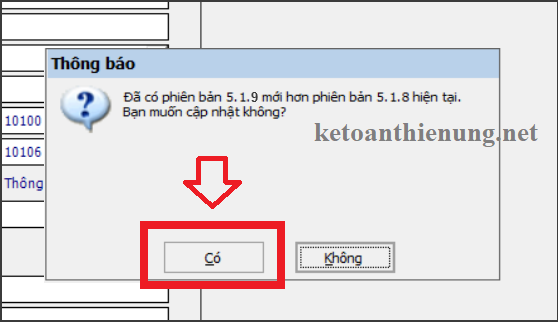
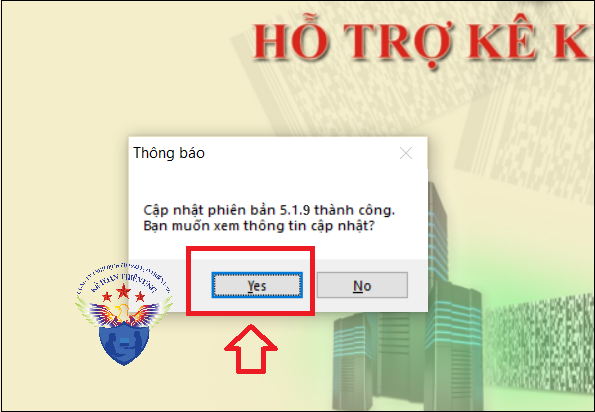

Phần mềm hỗ trợ kê khai thuế HTKK 5.1.9 mới nhất 2024 là Phần mềm HTKK mới nhất ngày 8/5/2024 của Tổng cục thuế. Download phần mềm HTKK 5.1.9 miễn phí tại đây.
Ngày 8/5/2024 Tổng cục Thuế thông báo về việc Nâng cấp ứng dụng Hỗ trợ kê khai (HTKK) 5.1.9
Tổng cục Thuế thông báo nâng cấp ứng dụng Hỗ trợ kê khai (HTKK) phiên bản 5.1.9 cập nhật tờ khai Thuế Giá trị gia tăng – mẫu 03/GTGT (TT80/2021), cập nhật địa bàn hành chính thuộc tỉnh Bình Dương, Tiền Giang đồng thời cập nhật một số nội dung phát sinh trong quá trình triển khai HTKK 5.1.8, cụ thể như sau:
A. Nâng cấp tờ khai Thuế Giá trị gia tăng – mẫu 03/GTGT (TT80/2021)
B. Cập nhật địa bàn hành chính tỉnh Bình Dương đáp ứng Nghị Quyết số 1012/NQ-UBTVQH15
- Cập nhật đổi tên Thị Xã Bến Cát, tỉnh Bình Dương và cập nhật các địa bàn hành chính thuộc Thị Xã Bến Cát như sau
+ Đổi tên Thị Xã Bến Cát thành Thành phố Bến Cát (mã 71103).
• Đổi tên Xã An Điền thành Phường An Điền (mã 7110323)
• Đổi tên Xã An Tây thành Phường An Tây (mã 7110325)
C. Cập nhật địa bàn hành chính tỉnh Tiền Giang đáp ứng Nghị Quyết số 1013/NQ-UBTVQH15
- Cập nhật đổi tên Thị xã Gò Công, tỉnh Tiền Giang và cập nhật các địa bàn hành chính thuộc Thị xã Gò Công như sau:
+ Đổi tên Thị xã Gò Công thành Thành phố Gò Công (mã 80703)
• Hết hiệu lực Phường 4 (mã 8070309)
• Hết hiệu lực Phường 3 (mã 8070305)
• Đổi tên Xã Long Chánh thành Phường Long Chánh (mã 8070303)
• Đổi tên Xã Long Hòa thành Phường Long Hòa (mã 8070317)
• Đổi tên Xã Long Hưng thành Phường Long Hưng (mã 8070313)
• Đổi tên Xã Long Thuận thành Phường Long Thuận (mã 8070315)
D. Nâng cấp cập nhật các nội dung phát sinh
1. Nâng cấp Tờ khai quyết toán thuế tài nguyên – mẫu 02/TAIN (TT80/2021)
- Cập nhật in đúng giá trị chỉ tiêu “(9) Thuế tài nguyên đã kê khai trong năm”.
- Cập nhật không hiển thị cảnh báo “Có lỗi xảy ra khi kết xuất tờ khai xml” và cho phép kết xuất tờ khai XML đối với tờ khai hợp lệ (không có cảnh báo đỏ)
2. Nâng cấp Tờ khai quyết toán phí, lệ phí và các khoản thu khác do cơ quan đại diện nước Cộng hòa Xã hội Chủ nghĩa Việt Nam ở nước ngoài thực hiện thu – mẫu 02/PHLPNG (TT80/2021)
- Cập nhật cho phép sửa chỉ tiêu “(7) – Số tiền phải nộp NSNN”
3. Nâng cấp Tờ khai Thuế thu nhập cá nhân – mẫu 05/KK-TNCN (TT80/2021)
- Bổ sung ràng buộc trên phụ lục 05-1/PBT-KK-TNCN: Kiểm tra chỉ tiêu “[08b] Tỉnh” của dòng “Chi nhánh” phải khác tỉnh của “Trụ sở chính”
4. Nâng cấp Tờ khai quyết toán thuế thu nhập doanh nghiệp – mẫu 03/TNDN (TT80/2021)
- Cập nhật khi mở lại tờ khai, ứng dụng hiển thị đúng thông tin các chỉ tiêu đã kê khai tại mục “IV.3 Dành cho NNT là các công ty chứng khoán” trên Phụ lục GDLK_ND132_01: chỉ tiêu (8) – Tổng lãi tiền gửi và lãi cho vay phát sinh trong kỳ, chỉ tiêu (9) – Tổng chi phí lãi vay phát sinh trong kỳ, (9.1) – Chi phí lãi vay được trừ trong kỳ.
Download Phần mềm HTKK 5.1.9 tại đây:

=> Các bạn chỉ cần Bật phần mềm HTKK phiên bản cũ đó lên => Phần mềm sẽ hiển thị Thông báo cập nhật lên Phần mềm HTKK 5.1.9 => Các bạn bấm nút "Có".


nhé.
KẾ TOÁN DIỆU TÂM
Chúc các bạn cài đặt và nâng cấp phần mềm HTKK mới nhất thành công!